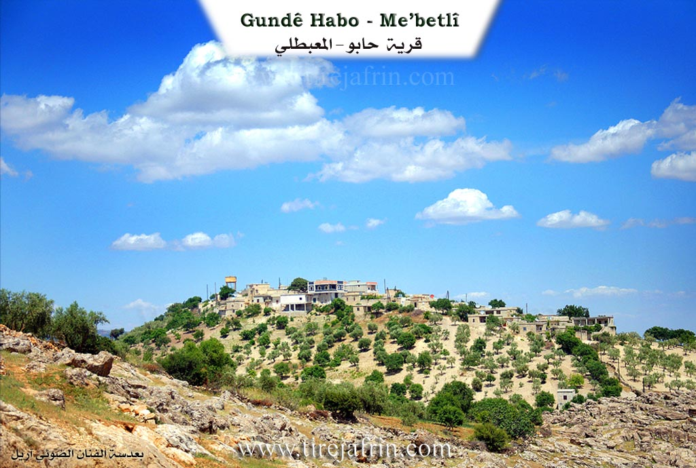
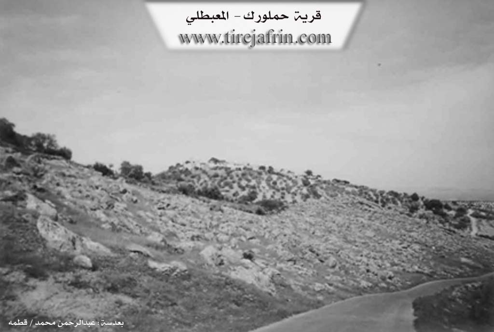

General Information
Nahiya (Subdistrict)
Mabeta
Also Known As
Al-Diflah, Gu.Ḧebo, Habo, Hebo, Xabû, الدفلة, حابو, حملورك, Ḧebo, Ḧemlorik
Tribes
Atmana
Families, Clans, etc.
Gendiso, Habû, Hemrok, Mala 'Utê, Mala Egîd, Mala Guncê Wan, Mala Hêbu, Mala Mihemejono, Mala Pito, Mala Şêxo

Photos


Basic Information about Ĥebo
Source: Ax û Welat
Etymology: Named after the founder Hecî Qasim or the original land owner Hêbu
Springs: Kaniya Zerê
Hills: Rîşê Kurkê, Çiyayê Hekarê
Shrines: Ziyaretê Henên
Ruins: Xirabê Xoyîn
Trees: Zeytûna Ehmedê Heskulakê, Darê Dînan
Wells: Bîra Qirşîliyê, Bîra Mezel
Other Landmarks: Geliyê Şiyê
Source: Afrin 366
Number of Caves: 1
Other Landmarks: Soryo, Şeytano, Rehmanî, Gundê Xelîl
Source: Khalil Sino
Etymology: Named after a man named Habû who arrived from a workplace or factory (me'mila) and established the first family there
Springs: Kaniya gundê Habû, Kaniya Gundî Hemo
Shrines: Tirba Ziwara
Ruins: Me'ser
Trees: Darî Çinare
Wells: Bîra Qaşliyê
Other Landmarks: Deşta Xezewiyê, Kaniya Berbîra, Berberxa, Berkara, Delîb, Kofkê Gendiso
Summaries
I. Summary from TirejAfrin Site (English) of Ĥebo
Source: https://www.tirejafrin.com/site/kura%20afrin%20%20%20mebetli%20-hebo.htm
It is stated in the book جبل الكرد (عفرين) دراسة جغرافية Çiyayê Kurmênc (Efrîn): A Geographical Study by د. محمد عبدو علي Dr. Mihemed Ebdo Elî:
Ĥemlorik / Gund Ĥebo, Arabicized as "Al-Diflah". Population: 813. Elevation: 700m.
Regarding the name Ĥebo: It comes from "Hebeş", which is an endearing form of the name Mihemed. Ĥem: A shortened name for Mihemed. As for Lorik: It means "curdled" (xaṯir) in Kurdish, and it is also a diminutive for the red spots that appear on the skin during an allergic reaction or exist naturally on fair skin. This was a personal characteristic of its first inhabitant, whose name was Ĥemê Zerî ("Blond Ĥem" or "Ĥem, son of the Blond woman"), considering that the letter in the word Zer acts as a feminine marker for the singular noun. Ĥemlorik is the older name of the village. As for the newer name, Ĥebo, it belongs to a person named Ĥeboyê Qefera, originally from the village of Mamal Uşaxî, who inhabited the village in the middle of the nineteenth century.
It is a small village situated on a high ground with steep slopes on all sides. Most of its inhabitants have migrated to the cities of Efrîn and Heleb.
It is stated in the book عفرين .... نهرها وروابيها الخضراء Efrîn... Her River and Her Green Hills by the writer عبدالرحمن محمد Ebdulrehman Mihemed from the village of Qetme:
Ĥemlorik / Ĥebo: A village in Çiyayê Kurmênc, administratively belonging to the Mabeta sub-district, Efrîn district, Heleb governorate. It is a small village located in the middle section of the mentioned mountain, atop a limestone mountain height. Its northern and western slopes descend steeply towards the Rîşe valley and are furrowed by watercourses heading east. It is 14km away from the town of Mabeta towards the northwest. Its soil is clay-based.
It is bordered to the north by a steep slope, a torrential valley, rugged mountain heights, and the village of Qudê Koy in the far north. To the south, it is bordered by a slope, several watercourses planted with olive trees, and the village of Xaziyan (lower and upper). To the west, it is bordered by a rugged slope, a torrential valley, mountain heights, and the villages of Xelîl Kalko and Mamal Uşaxî. To the east, it is bordered by a slope and the village of Sarî Uşaxî at a distance of 1km.
The number of its houses is approximately 38, and its age is about 300 years. Its old dwellings are made of stone and mud with flat wooden roofs, while the modern ones are of stone and cement, spreading towards the east and around the old site. An electricity network is available, as well as a water network connected to the well of the village of Rehmaniya at the bottom of the valley, which has been invested in since 1981. There is a modern primary school on the western side of the village.
Its population reached 850 people in 2005. Its inhabitants work in rain-fed agriculture (grains, olives, vines, and other fruit trees), alongside raising sheep and goats. A dirt road connects it to the sub-district center, and an asphalt road passes near it on the western side, at a distance of 500m, leading to the villages (Xelîl Kalko and neighboring villages).
Among its most important families: The Hemrok family (the first to inhabit the village, and the village was named after them). It is mentioned that Judge Ebdulrehman Egîd is one of the sons of this village.
Village Mukhtar: Ehmed Hebeş Bilal
Preparation and execution:
Director of Tirej Efrîn site: Ebdulrehman Hacî Osman
Sources:
- Book: جبل الكرد (عفرين) دراسة جغرافية Çiyayê Kurmênc (Efrîn): A Geographical Study by د. محمد عبدو علي Dr. Mihemed Ebdo Elî.
- Book: عفرين .... نهرها وروابيها الخضراء Efrîn... Her River and Her Green Hills by عبدالرحمن محمد Ebdulrehman Mihemed from the village of Qetme.
- 20/12/2013
II. Summary of Ĥebo from Ax û Welat
Source: https://www.youtube.com/watch?v=9KMHoMDR_jc
The village of Hêbu, also formally known as Hecî Qasima, is situated on a high mountain peak in the Mabeta district of Efrîn. Known for its high altitude and constant cool breeze, the village was established by a figure named Hecî Qasim (also referred to as Hêbu, the original owner of the land). According to oral history, the founder migrated from the village of Me'mil Uşaxî (or Memila), cleared the brush, and established the settlement. The lineage of the founder is traced through ancestors like Koleyê Hêbu.
The social structure of Hêbu is defined by a convergence of different families migrating from various locations to join the original settlers. Mala Egîd arrived from Tahîkê and settled alongside the founding family. Mala Pito migrated from Soryê, while Mala 'Utê came from Me'mil Uşaxî. The Mala Şêxo family traces its origins specifically to the Atmana tribe. There is also mention of Mala Mihemejono, who established ties with the founding lineage by marrying a daughter of Koleyê Hêbu.
Historically, the village faced significant water scarcity due to its elevation. Residents relied heavily on wells such as Bîra Qirşîliyê and Bîra Mezel (the Cemetery Well). In the era of Koleyê Hêbu, winters were severe with heavy snowfall. Villagers would collect snow in large pits called qopa to melt for water during the dry months. The village is surrounded by specific landmarks, including the spring Kaniya Zerê, the valley Geliyê Şiyê, and hills like Rîşê Kurkê and Çiyayê Hekarê. Notable trees served as markers, such as Zeytûna Ehmedê Heskulakê and Darê Dînan.
The village maintains a strong spiritual tradition rooted in the Rifaî Sufi order. A community of elders, referred to as şêxler, performs zikir ceremonies on Thursdays and recites religious hymns in both Kurmanji and Arabic. They historically visited the shrine Ziyaretê Henên. Modern developments were championed by figures like Şewket Agid, who helped bring electricity and water infrastructure to the village. The community also honors local martyrs, including Şehîd Çekdar Efrîn, who died in Nînowa, and the village commune is named after Şehîd Viyan Amara. Daily life involves communal traditions, such as the preparation of bulxur and the use of traditional herbal medicine practiced by elders like Merhaba, who learned from her father Bavê Hecî.
II. Summary of Ĥebo from Afrin 366
Source: https://www.youtube.com/watch?v=LWE_Re5CBjU
The documentary footage offers an intimate look at the village of Hebo, situated within the administrative district of Mabeta in the Afrin region. The hosts describe the location as being approximately seven or eight kilometers from the center of Mabeta. Hebo is characterized as a small village ("gundê çûçik e") rather than a large settlement. The visit takes place under difficult winter conditions, with the hosts noting the fog ("mij") and rain that have transformed the landscape. Despite the weather, they emphasize the aesthetic appeal of the village's natural stone environment, remarking on how the rain has filled the surroundings with water and mud, yet also brought out the beauty of the area.
A significant portion of the transcript focuses on the geological and natural features found within and immediately around Hebo. The filmmakers explore a rocky area containing a "berqef" (a rock shelter or cave entrance). They engage in a detailed discussion about markings found on the stones, referring to them as "remz" (symbols) and "îşaret" (signs). The host speculates that people knowledgeable in "alim el asar" (the science of antiquities) would recognize these holes and patterns as indicators of something hidden or significant inside the rock, though the hosts admit they lack the expertise to interpret them. This suggests a local belief that the rocky terrain of Hebo holds historical or archaeological secrets.
Nature is a central theme of the visual narrative. The hosts express wonder at a specific tree that has managed to grow directly out of a solid rock ("tahtê hişk"), viewing it as a marvel of the natural world. They also highlight the abundance of water due to recent rains, noting that the earth has been satiated ("erdê têr av bî"). While the village infrastructure is briefly mentioned, specifically the presence of village water ("ava gundî") but a lack of electricity cables at the time of filming, the focus remains largely on the landscape.
In terms of regional geography, the transcript places Hebo in relation to several neighboring localities. Towards the end of the video, the host points out nearby places visible from their location, specifically naming Soryo and Şeytano. He clarifies that Soryo is referred to as Rehmanî in Arabic ("B'erebî dibên Rehmanî ye"). The road leading to the neighboring village of Gundê Xelîl is also mentioned as being close by. The video was produced in response to requests from viewers, including a specific individual named Kawa, and the hosts mention having previously filmed in the village of Bêgova, linking Hebo to the broader network of Kurdish villages in the region.
II. Summary of Ĥebo from Khalil Sino
Source: https://www.youtube.com/watch?v=edRVwffcrSA
The documentary features Gundê Habû which is located in the Deşta Xezewiyê plain within the Efrîn region. According to a resident named Şukrî the village derives its name from a founding figure named Habû. Oral history states that Habû arrived in the area from a workplace or factory known as "me'mila" and settled in the uninhabited plain to raise a family. While there are no written records regarding the exact foundation date local elders believe the village is quite ancient. They estimate that the prominent plane tree known as Darî Çinare and the village well have existed for over 500 years.
The social structure and demographics of Gundê Habû have shifted dramatically over time. Şukrî explains that the village was historically home to between 200 and 300 households. However migration to cities like Heleb and countries such as Tirkiyê or various nations in Ewrûpa has reduced the population to approximately 28 households. Despite this decline the residents maintain a strong connection to their history. An elder woman named Habîba recalls the "tebeqo" era and the strong communal bonds that existed before families were separated by migration. She describes daily chores such as fetching water and washing clothes at Bîra Qaşliyê.
Notable landmarks define the geography and memory of the village. The residents highlight specific locations in the surrounding fields including Kaniya Berbîra and Berberxa and Berkara. Within the village there is an ancient olive press referred to as Me'ser or "Mekbez" which speaks to the agricultural history of the area. A traditional stone roller known as a Delîb sits unused as a relic of past grain processing. The area around the water sources is particularly significant with the host visiting Kaniya gundê Habû and a specific site called Kaniya Gundî Hemo where the ancient Darî Çinare stands. The village also contains a cemetery where the host visits Tirba Ziwara and mentions a specific location called Kofkê Gendiso.
II. Ax û Walat Book 1
The Village of Hebo
12.7.2016
The village of Hebo is affiliated with the Mabeta district of the Efrîn canton. It is located 7 km northwest of the town of Mabeta and 25 km northwest of the city of Efrîn.
The name of the village comes from a person named Hebo, who came from the village of Me’mila and founded the village in its current location. Later, the family of Egîd came from the village of Tayîkê and settled in the village of Hebo. Other families also came later and the village was settled.
There are 5 families in the village:
112
The family of Hebo, Egîd, Pito, Têne, and the family of Cano. All families are Şêxî.
To the east of the village are the villages of Şeytana and Sariya. To the south are the Şiyê valley and the two villages of Xazyanan. To the west are the villages of Xelîl and Me’mila, and to the north are Rîşê Kurka and the Ekarê mountain.
The village of Hebo was built on a high mountain, so its wind is very cool and clean and never stops.
To the south of the village, there are water cisterns, and around them, it has become a burial ground or the village cemetery.
The Qurşînliyê well is to the south of the village; it was given this name because of its cold water.
The Zerê spring is to the west of the village, and its water is still available today. Previously, the villagers planted vegetable gardens around it and irrigated them from it.
There is a shrine to the east of the village. The villagers visit it to pray for rain, prepare food, and ask God to grant their wishes and desires.
The people of the village make their living from agriculture, from olive, almond, grape, walnut, and sumac trees. Along with agriculture, some families own flocks of sheep and goats, and they support their families with the products of these animals. Some people also work as plowmen with oxen because most of
113
the village's lands are mountainous or rocky. There is a sewing workshop in the village where nearly 10 people work. Several people work as employees in the institutions and organizations of the Democratic Self-Administration in Efrîn.
There are nearly 70 houses and around 800 people from the village, of whom around 300 have settled in the city of Efrîn and live there.
There is a martyr from the village who was martyred in the National Liberation War, with the nickname: Ş. Çekdar Efrîn, and he joined the campaign to liberate Şengal. Later, on 14.6.2015, he was martyred in the village of Se’diyê in the Kobanê canton and joined the caravan of the immortals.
The village commune is named after Martyr Viyan Amara, and there is a primary school in the village. Previously, there was an olive press in the village, but now nothing remains. There is a stone mill in the village, which is sometimes used for grinding grain.
It is worth noting that the Hebo family are Şexler, and on every religious occasion, they perform zikir and follow and preserve the culture of their ancestors. They also recite mawlids with religious hymns.
There are several famous people from the village, among them:
114
Şêx Mihemed Ismaîl is one of the Muslim religious figures who would have mawlids recited and would perform zikir on Thursday evenings with all the villagers present. It is said that he worshipped for 40 days in an underground chamber and entered seclusion, meaning he isolated himself from everyone and devoted himself to worship. He had only one opening for food; it was opened once a day to send him food, and his food was only raisins.
Şewket Egîd is a person from the village of Hebo who has done a lot of work and effort for his village and has provided many services. He played a major role in bringing electricity and the water network to the village.
Ebdirehman Egîd works as a prosecutor in the People's Court of the Efrîn canton.
Daliya Henan is the co-chair of TEV-DEM in the Efrîn canton.
The level of education in the village is good, and nearly 50 people have obtained university degrees in various fields.
Transcriptions and Subtitles
| Source | Video | Subtitles | Transcript |
|---|---|---|---|
| Afrin 366 1 | Watch Video | Download SRT | View Transcript |
| Ax û Welat 1 | Watch Video | Download SRT | View Transcript |
| Khalil Sino 1 | Watch Video | Download SRT | View Transcript |
Foundation/Origin Information of Ĥebo
The Hamruk family were the first to live in the village.
Source: TirejAfrin Site
The village traces its origins to a founder named Habo who migrated from the area of Ma'mala to settle and populate the land.
Source: Halil Sino Transcript
Possible Village Name Meaning of Ĥebo
Ḧemlorik is the older name, a characteristic of its first inhabitant named Ḩemê Zerê. The newer name Ḩebo is for a person called Eboyê Qeferaḧ, originally from Q. Ma'mal Oshaghi, who lived there in the mid-19th century. Ḩebo is from "Habash" a nickname derived from Mohammed.
Source: TirejAfrin Site
The village is named after its founder, Habo.
Source: Halil Sino Transcript
V. Links
- Tirej Afrin:
https://www.tirejafrin.com/site/kura%20afrin%20%20%20mebetli%20-hebo.htm - Ax û Welat:
https://www.youtube.com/watch?v=WYfd4p5TPRc - Local FB page:
https://www.facebook.com/GUNDEHABO - Link:
https://www.youtube.com/watch?v=9KMHoMDR_jc - Afrin 366:
https://www.youtube.com/watch?v=LWE_Re5CBjU - Khalil Sino:
https://www.youtube.com/watch?v=edRVwffcrSA